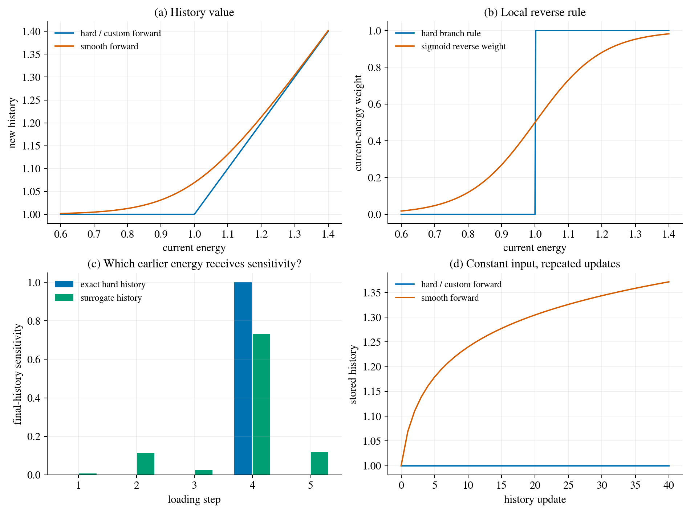

Differentiating fracture: memory, switches and useful limits¶
Start with the short animated explanation to see how loading, unloading and a new energy maximum change the reverse route.
What is the derivative of a simulation?¶
Suppose we change a particle centre or a fracture-energy parameter by a small amount. We ask how the predicted observations and their mismatch change. For parameters \(\theta\), states \(z\), an observation operator \(\mathcal O\) and measured data \(y\), the chain is
Differentiability is a local property of this map with respect to specified inputs. It is different from continuity of a field in space. Every operation on the relevant parameter-to-loss path needs an appropriate derivative rule. Fixed mesh connectivity, logging and parameter-independent preprocessing do not themselves need derivatives. A custom implicit backward rule can cover an entire numerical solve without recording every inner iteration.
Start with one spring: \(ku=f\), \(J=\frac12(u-y)^2\). Its derivative is \(dJ/dk=-(u-y)u/k\). If \(\theta=\log k\), the chain rule gives \(dJ/d\theta=k\,dJ/dk\). The same principle applies to a finite-element solver; the difficult part is preserving every dependence and identifying switches.
Three different meanings of smoothness¶
Spatial regularisation. A sharp crack has a displacement jump. Phase-field fracture represents damage with a spatial field \(d\in[0,1]\) and a length scale \(\ell_0\). For example, \(d(x)=\exp(-|x|/\ell_0)\) is an illustrative diffuse profile normal to a crack, not a newly computed PhAST solution. Increasing \(\ell_0\) changes the represented damage width and the model. It does not automatically smooth the parameter-to-observation map.
A kink in an update. \(\max(a,b)\) is continuous: approaching a tie does not produce a jump in its value. Its slope changes abruptly. A step function is a different object, with a discontinuous value. Damage bounds, positive energy splits and history maxima introduce such nonsmooth choices even on a fixed mesh with a spatially diffuse crack.
A change of solution branch. Crack initiation, competing paths and instabilities can cause a parameter perturbation to follow a different evolution. The local derivative of the current numerical trajectory does not predict every alternative trajectory.
Some teaching fluid solvers have fixed grids, smooth operators and modest time horizons, which makes differentiation easier to demonstrate. Fluid mechanics also includes shocks, interfaces, flux limiters, changing contacts and chaotic long-time sensitivity. The useful comparison is between smooth, well-conditioned discrete maps and nonsmooth or unstable maps, rather than between fluids and solids as entire disciplines.
Memory during loading and unloading¶
For the tensile-energy history formulation, each material sampling point retains its largest crack-driving energy:
Here \(\psi^+\) is the configured tensile driving energy density, not damage or strain itself. On unloading the current energy can fall, while \(H\) remembers the earlier maximum. PhAST also applies damage bounds; the history field alone should not be described as the complete bound-constrained algorithm.
Holding \(H_n\) fixed, \(\partial H_{n+1}/\partial\psi^+\) equals zero below \(H_n\) and one above it. At a tie there is generally no unique classical partial derivative. PyTorch’s elementwise maximum assigns half to each operand at equality. This is a differentiation convention, not a proof of smoothness. If both operands have identical parameter derivatives, their composition can still be differentiable at a tie.
For a concrete unloading example, take \(H_n(\theta)=2\theta\) and \(\psi^+_{n+1}(\theta)=\theta\) near \(\theta=1\). The old history wins, but \(dH_{n+1}/d\theta=2\). Only the route through the current energy is inactive; sensitivity through the stored history remains. Detaching that history would remove a real contribution.
What PhAST actually implements¶
The source provides several selectable history operators. A result must be identified by its effective configuration, not merely by the presence of an operator in the repository.
History choice |
Forward value |
Reverse rule |
Meaning |
|---|---|---|---|
|
\(\max(a,b)\) |
Active branch; half at a tie |
Local hard-map derivative away from switches |
|
\(\beta^{-1}\log(e^{\beta a}+e^{\beta b})\) |
Derivative of this smooth forward |
Changes the history model |
|
\(\max(a,b)\) |
Sigmoid-weighted rule |
Surrogate reverse derivative near a switch |
|
\(\max(a,b)\) |
Sigmoid of a scaled energy difference |
Same distinction with explicit units |
The dispatcher also provides quadratic and log-domain smooth alternatives.
There is a legacy detail: selecting hard_max with a positive
softmax_H_beta invokes a softplus smooth maximum. Therefore both settings
must be recorded. These are available routes, not evidence that every
historical experiment used the same route.
Smooth forward: bias is part of the choice¶
The operator called softmax in this code is a scalar log-sum-exp smooth
maximum. The usual softmax returns normalized weights; those weights are
the derivatives of log-sum-exp. With \(a=H_n\) and \(b=\psi^+\),
Numerically use logsumexp, logaddexp or stable softplus, rather than
forming potentially overflowing exponentials. Its one-update bias satisfies
\(0\le S_\beta-\max(a,b)\le\log(2)/\beta\). At equality this is
\(\log(2)/\beta\). Repeatedly updating against a constant energy \(c\), starting
from \(H_0=c\), gives \(H_n=c+\log(n+1)/\beta\). Artificial history growth can
therefore occur without increased loading. A small local bias is not a
guarantee of negligible trajectory error.
Hard forward with a custom reverse rule¶
The custom implementation saves the two operands and a scalar sharpness. It returns the exact hard maximum. Given an incoming loss sensitivity \(\overline H=\partial J/\partial H_{n+1}\), it returns
It saves neither a full Jacobian matrix nor a history of strain Jacobians. These products are the local vector–Jacobian product (VJP). Later backward steps carry \(\overline a\) through the earlier history. Away from a tie, a finite-width sigmoid differs from the classical derivative of the hard forward. It is a surrogate gradient, even when it helps optimisation. Differentiating the smooth sibling validates the sigmoid formula; it does not validate that formula as an exact derivative of the hard forward.
For example, set \(a=1\), \(b=0.99\), \(s=10\). Small perturbations of \(b\) keep the hard output at 1, so the hard-map FD derivative is zero. The custom reverse rule gives \(\sigma(-0.1)\simeq0.475\). Both numbers describe their respective rules correctly. The difference is retained in the computation below.
The research variant uses \(s=\widehat s/\psi_{\rm ref}\), so the sigmoid argument \(\widehat s(a-b)/\psi_{\rm ref}\) is dimensionless. The scale \(\psi_{\rm ref}\) is a fixed positive reference energy in this rule; its derivative is not included. Converting energy units requires converting that reference too. Very sharp sigmoids can saturate to zero or one in finite precision, so a nonzero gradient on both branches is not guaranteed.
{kind=link}

Figure 7 Four views of the same distinction. (a) The custom rule shares the hard forward; log-sum-exp changes its value. (b) The sigmoid is a smooth-forward derivative or a hard-forward surrogate, depending on the forward choice. (c) With distinct energy peaks, exact history sensitivity reaches the largest earlier peak; a finite-width surrogate redistributes it. (d) Repeated constant-energy updates reveal the smooth-forward bias. All quantities here are dimensionless teaching examples, not fitted fracture results.¶
How the derivative passes through a damage solve¶
For an illustrative interior AT2 subproblem with fixed boundary data,
Implicit differentiation gives \(A\,d\widetilde d=db-(dA)\widetilde d\). For a scalar objective, solving \(A^T\lambda=\overline{\widetilde d}\) yields \(\overline q=\lambda^T(b_q-A_q\widetilde d)\) for each input \(q\). The operator derivative \(A_q\) matters as much as the right-hand-side derivative. This is an equation-level derivative evaluated with finite solver accuracy, assuming a locally invertible reduced operator.
For a solve-then-project map \(d_{n+1}=\min(1,\max(d_n,\widetilde d))\), the strictly interior nodes route sensitivity to \(\widetilde d\). Strictly lower-active nodes route it to \(d_n\); strictly upper-active nodes route none to either when the bound 1 is fixed. The adjoint right-hand side is masked accordingly. The operator derivative uses the pre-projection \(\widetilde d\), not the clipped field. A different projected iterative or constrained-equilibrium forward requires its own consistent backward derivation. We must establish which map was executed before applying this formula. Requested tolerances should be accompanied by measured residuals; an unattained request is not a tighter solved system.
The time loop then composes mechanics, energy, history and damage VJPs using
the preceding chapter’s reverse recurrence. Checkpointing recomputes saved
segments to reduce memory; it must reproduce the same states and branches.
Higher-order derivatives need additional verification, especially through
custom backward routines implemented under no_grad.
Where useful gradients end: a diagnostic guide¶
Situation |
What to inspect |
Interpretation and a targeted response |
|---|---|---|
Stable active branches, converged solves and a backward consistent with the executed forward |
Directional FD sweep and primal/adjoint residuals |
Local derivative agreement is expected; record coordinates and operating point |
History tie, damage bound or energy-split switch |
One-sided slopes, perturbation sizes, branch identities |
A unique classical derivative can fail; report the selected convention or surrogate |
Surrogate reverse rule near a switch |
Hard-forward FD and smooth-sibling formula separately |
Preserve disagreement; assess search usefulness separately from exactness |
Excessive smoothing |
History drift, crack onset and parameter estimates versus smoothing scale |
Smooth-forward bias is a model effect; use stable, unit-consistent scales and retain comparisons |
Gradient saturation or uninformative loading |
Observation sensitivity and individual gradient routes |
A correct zero derivative can be physical; consider richer observations/loading, not invented information |
Nearly singular mechanics/damage operator |
Measured residuals and conditioning |
Implicit sensitivities can become large or unreliable; improve solves and diagnose the operating point |
Different crack paths or failed forward convergence |
Full fields, event times, stopping status |
Local sensitivities need a stated branch and valid forward trajectory |
Long trajectories or unstable time steps |
Gradient norm versus horizon, stability and replay agreement |
Products can vanish or amplify; checkpointing saves memory but does not cure instability |
Broken dependency or stale solver state |
Detached tensors, overwritten caches, reset history and immutable solve data |
An implementation fault can silently change the differentiated map; use small regression tests |
Non-identifiable parameters |
Observation-Jacobian rank and alternate parameter fits |
Correct derivatives do not establish uniqueness; add independent data or state the ambiguity |
Finite-difference tests must reset histories and keep mesh, time steps, objective, loading, coordinates and bound treatment matched. For a normalized direction \(v\), compare \([J(\theta+hv)-J(\theta-hv)]/(2h)\) with \(g^Tv\) over a range of \(h\). If active-set memberships were not saved, aggregate count changes establish that some membership changed, but cannot locate it; equal counts do not prove equal memberships. A Taylor remainder with quadratic decay is evidence on a smooth, resolved interval, not across every branch.
These are operational checks, not a universal threshold for how far a particle can be initialized from its target. Recovery depends on loading, observability, parameterization, mesh and optimisation as well as derivatives.
Exercise 1: does unloading remove the gradient?¶
For \(H_n=2\theta\) and \(\psi^+=\theta\) at \(\theta=1\), calculate the total derivative of the new history. What would detaching \(H_n\) do?
Worked solution
The new history is \(2\theta\), with derivative 2. Detaching it discards this route and returns zero locally, although the physical parameter affects the earlier loading. A zero current-energy partial derivative is not the same as a zero total parameter derivative.
Exercise 2: is agreement at a tie enough?¶
Central FD of \(\max(0,q)\) at \(q=0\) is one half. Does that prove smoothness?
Worked solution
No. The left slope is zero and the right slope is one. Central FD averages the two. A matching software value at that point does not establish a unique classical derivative.
Exercise 3: which smoothing changes the fracture calculation?¶
Distinguish changing \(\ell_0\), changing the history forward to log-sum-exp, and changing only the history backward to sigmoid weights.
Worked solution
Changing \(\ell_0\) changes the phase-field model and characteristic spatial width. Log-sum-exp changes the history values and can change damage evolution. The custom backward preserves hard history values for a fixed parameter trajectory but changes the inverse update direction; later optimizer iterates can therefore differ. None guarantees successful recovery.
Source map and optional perspectives¶
The implementation inspection covers phast/physics/h_update.py,
phast/physics/h_update_custom_subgrad.py, StaggeredSolver._H_update, and
the implicit functions in phast/solvers/damage_solver.py. The public teaching
snapshot contains the dimensional custom rule; the explicit dimensionless
variant is in the Particle Inverse research worktree. Its manuscript describes
that variant for the single-particle study. This distinction is not transferred
to unrelated runs without their configuration receipts.
The accompanying teaching code is a minimal, self-contained illustration of the audited rules. It is not a replacement damage solver. The private source audit records exact files and hashes separately from these portable lessons.
PyTorch’s autograd documentation describes derivative conventions for nonsmooth primitives. Physics-based Deep Learning explains composing numerical operators and computing transpose-Jacobian products without storing full matrices. Felix Koehler’s Machine Learning and Simulation repository contains complementary explicit and implicit adjoint examples. ADL4P provides the broader course context. All derivations required for this lesson appear above.